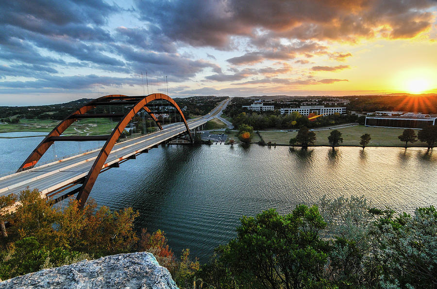
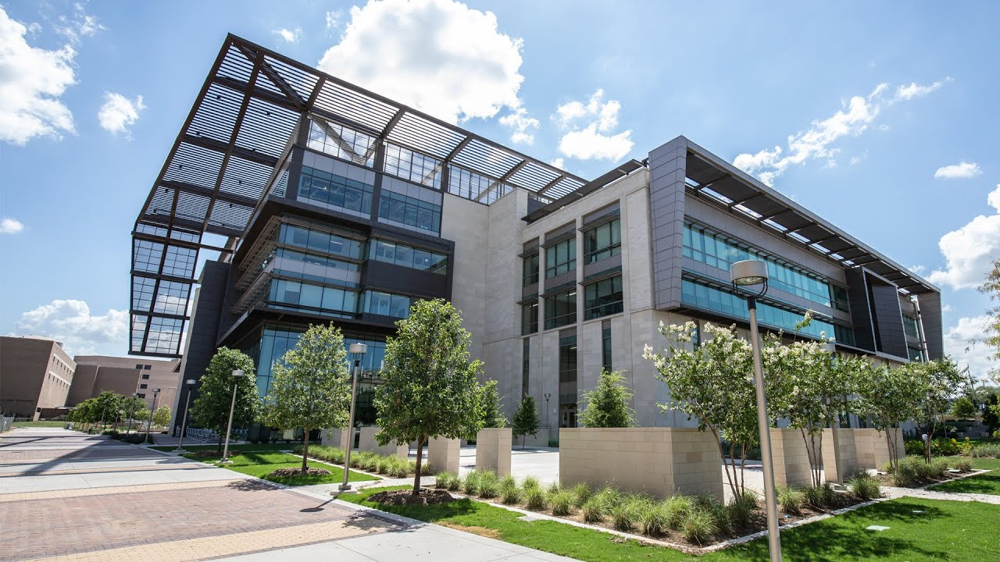

DYLAN NGUYEN TEST
DYLAN NGUYEN TEST
If you haven't figure it out yet, my name is Dylan Nguyen and I am currently a Junior Computer Science major and Mathematics minor at Texas A&M University. I was born and raised in Austin, TX. You will see more of my qualifications throughout this site, but in summary I have completed many computer science classes including Data Structures and Algorithms and Computer Organization, and have proficiency in the following languages: C++, Java, Python, JavaScript, and HTML. This fall semester I am taking two math classes, Introduction to Computer Systems, and Programming Studio. Some of my personal projects include this website, and J.P. Morgan's Software Engineering virtual experience which consisted of interfacing with a stock-price data feed. My post-graduation goal is to work as a Software Engineer at a financial institution such as J.P. Morgan, Goldman Sachs, and etc. Eventually, I want to transition into management where I will be dealing more with the client side.
Navigate through the menu bar at the top to see a more in-depth description of my qualifications, and check out some of my extracurricular activities/organizations below that demonstrate my leadership skills!
EXTRACURRICULARS
I was a fish camp counselor this past summer as well as summer 2020. I'd have to say that Fish Camp has been one of my most life-changing experiences. The fellow counselors I met really allowed me to diversify my views. Aside, from meeting the counselors, our main goal was to welcome the incoming freshmen classes and show them that they already have a family at Texas A&M (us). We worked hard all throughout the summer to make sure the freshmen had the best experience.


This year I had the privilege of starting a new chapter of NOBE at Texas A&M University. I am currently the president, and some of my duties include convening bi-weekly meetings, reaching out to companies to speak at meetings, and facilitating events to provide members with a learning experiences in both business and engineering concepts. I also developed an officer team to assist me.
In 2019, which was my freshman year of college, I joined a FLO (Freshman Leadership Organization) under the name of FEAST. There were 30 freshmen boys and 30 freshmen girls along with 12 total co-chairs. Each freshmen was put into a social and organizational committee. I was in the fundraising committee where we developed new ways to fundraise for FEAST. Along with that we participated in my social and service events. My favorite social event was FLO bowl which consisted of the guys cheerleading, and the girls playing football. Each FLO would meet up at Penberthy fields to face off in a football tournament. My favorite service event was Feed My Starving Children, where we drove up to Dallas for a weekend to hang out and package meals for the less fortunate.